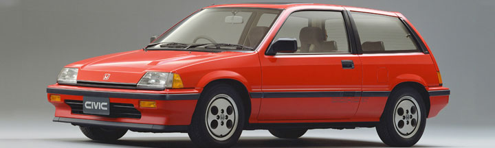
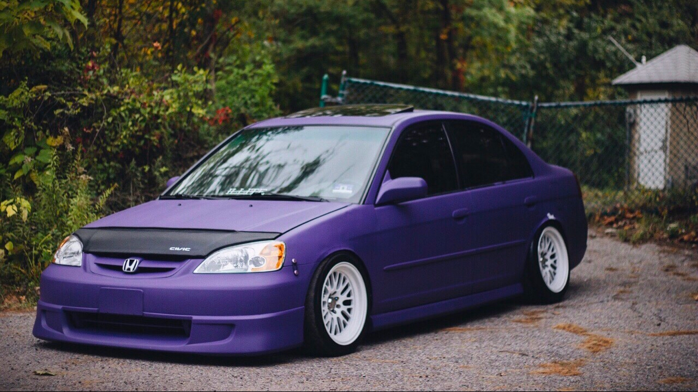

This is the origninal model of the Honda Civic. As you can see, there have been a multitude of reformations between the vehicles current state and
its humble beginnings.

This model was a product of the Honda Crusades, and
stands as a reminder of what war brings to beauty. Over 20,000 jobs were lost in the conflict, and the topic is still considered
contriversial to this day.

This Honda Civic came from the golden age of engineering, 2003. And stands as a testiment of time and the efficency of the
production line.

The current model of the Honda Civic. In its current state, nothing can surpass this ultimate lifeform, and quite frankley, there is
no reason to even attempt such a feat.